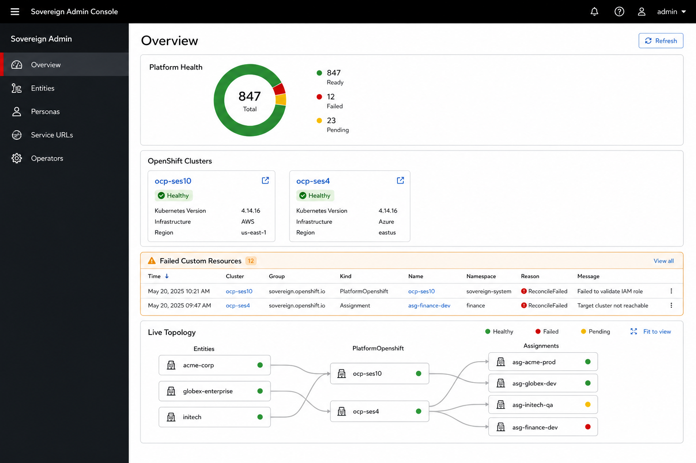
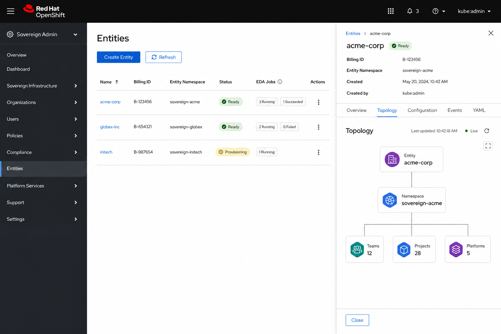
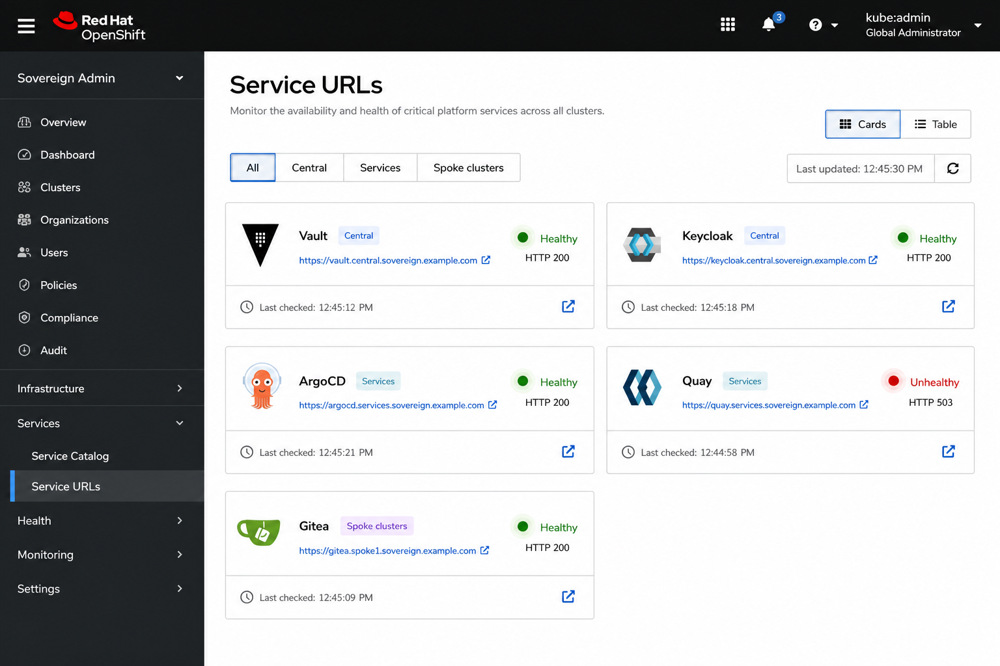
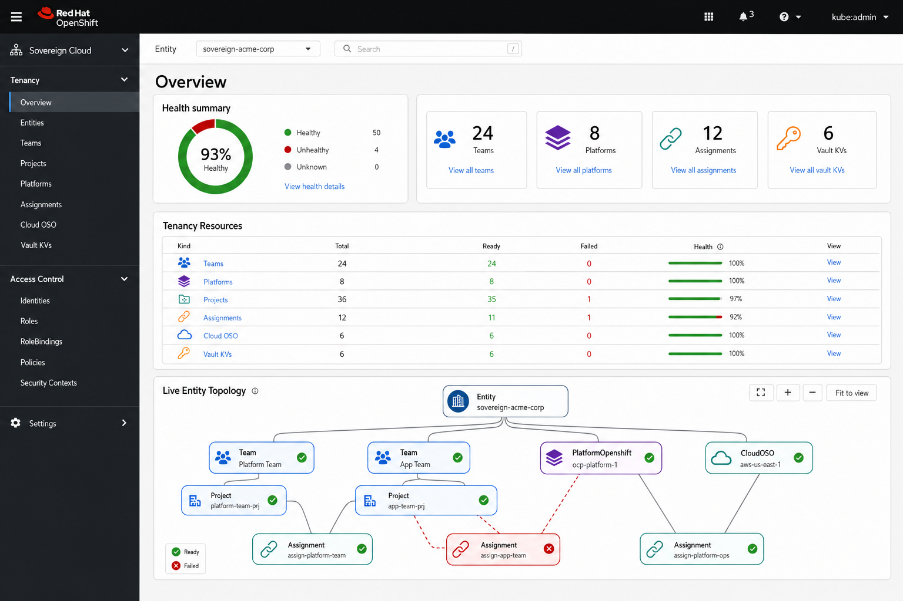
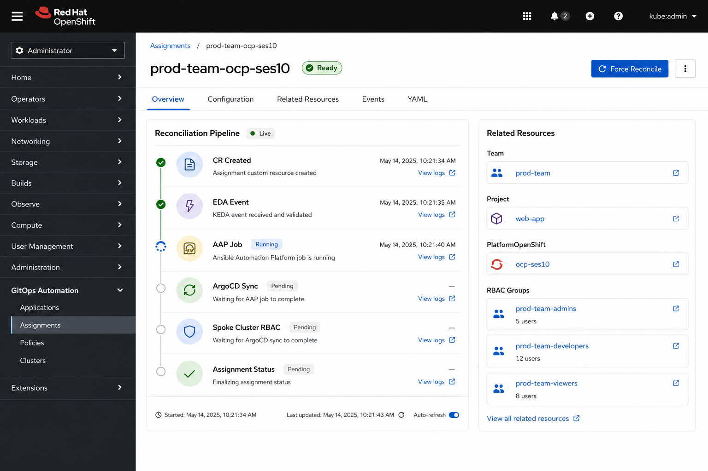
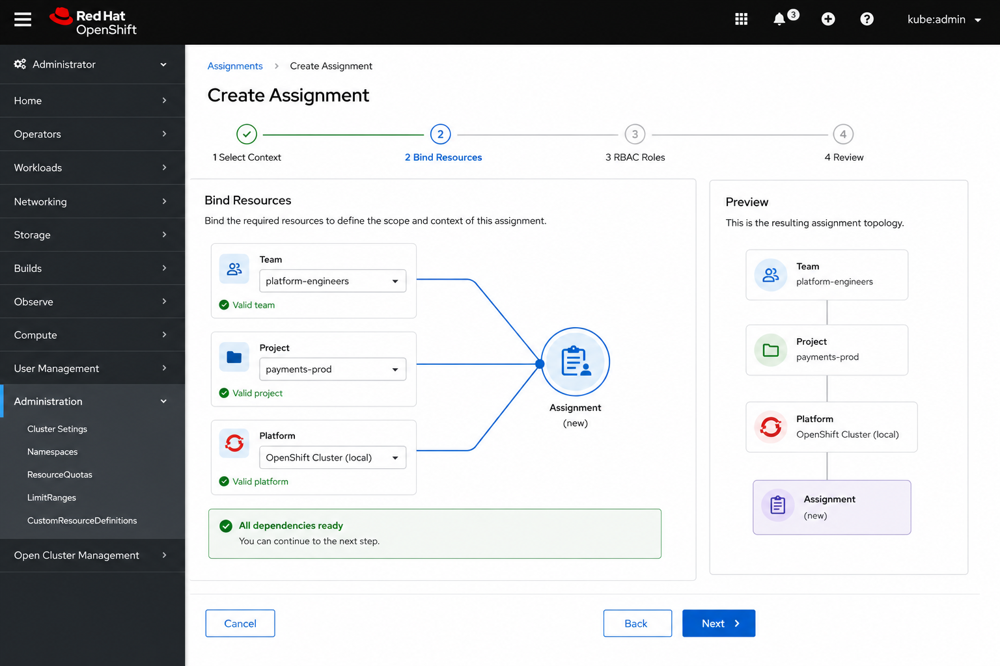

Role: Principal UI Architect
Scope: user_dashboard (Global Admin) and tenancy_dashboard (Tenant Admin)
Target aesthetic: OpenShift Console (PatternFly 5, admin perspective, native navigation)
Status: Design proposal — no code changes
Date: 2026-06-30
Sovereign Cloud already ships two OpenShift Console dynamic plugins (sovereign-admin-plugin, sovereign-tenant-plugin) built on PatternFly 5 and @openshift-console/dynamic-plugin-sdk. The foundation is sound: console-native navigation, user OAuth token for all K8s calls, compact tables, status badges, and EDA job chips.
The primary UX gap is cognitive load. Operators manage a graph of interdependent custom resources (Entity → Team/Project/Platform → Assignment → spoke provisioning) but the UI presents mostly flat tables. The redesign keeps the OpenShift Console shell and elevates live topology diagrams, reconciliation pipelines, and guided workflows so the interface reflects the underlying implementation rather than hiding it behind YAML.
| Principle | Meaning |
|---|---|
| Console-native | Feel like an OCP admin page: breadcrumbs, list/detail, tabs, status popovers, no custom chrome |
| Implementation-visible | CR dependency graph, EDA/AAP pipeline, and ArgoCD sync state are first-class UI elements |
| Scope-aware | Global admin = cluster-wide, no namespace filter. Tenant admin = entity namespace as primary context |
| Actionable health | Every red/yellow indicator links to root cause, logs, or the next remediation step |
| Progressive disclosure | Overview → list → detail → YAML; experts can go deep, novices stay guided |
| Layer | Current |
|---|---|
| Framework | React + PatternFly 5 |
| Integration | OCP dynamic plugin (console-extensions.json, consoleFetch) |
| Auth | User bearer token via console proxy (no pod SA for user actions) |
| Styling | main.css with PF CSS variables — dark mode compatible |
| Shared patterns | PageHeader, StatusBadge, EdaJobsChips, ForceReconcileButton, ResourceDetail tabs |
user_dashboard) — today Navigation section: Sovereign Admin
Routes: Overview, Entities, Personas, Service URLs, Operators
| Page | Strengths | Gaps |
|---|---|---|
| Overview | Donut chart, cluster tiles, alerts table, per-kind health | No topology view; alerts lack deep links; scroll-heavy single column |
| Entities | List + inline detail via ResourceDetail; create form |
No entity-scoped topology; delete uses window.confirm |
| Personas | List pattern | Read-only feel; weak link to Entity/Persona RBAC story |
| Service URLs | Multi-cluster routes + live HTTP health | Card/table toggle missing; no cluster topology context |
| Operators | CSV grouping by category | No link from degraded operator → affected CRs |
tenancy_dashboard) — today Navigation section: Sovereign Cloud (Tenancy + Access Control separators)
Routes: 14 resource types + create/edit flows
| Page | Strengths | Gaps |
|---|---|---|
| Overview | Namespace picker, kind stats, OIDC cluster cards | Topology absent; Entity entry point is namespace dropdown only |
| Resource lists | Reusable ResourceList: auto-refresh, stat bar, detail drawer |
14 similar pages — no unified “my stack” view |
| Create forms | Dependency dropdowns (e.g. Assignment pulls Team/Project/Platform) | Flat forms; no wizard; no live validation against CR readiness |
| Resource detail | Overview / Configuration / Conditions / YAML tabs | No Related Resources tab; no pipeline diagram; no Events from K8s API |
From the platform architecture, the operator-facing mental model is:
Automation path (what “EDA Jobs” chips represent):
The UI should make both graphs live — nodes colored from CR status.ready, edges from spec references, pipeline stages from status.edaJobs and conditions.
Adopt OCP Console list/detail conventions explicitly:
| OCP pattern | Sovereign application |
|---|---|
| ListPage layout | Title left, actions right, filter bar below title |
| ResourceKebab | Reconcile, Edit, Delete in overflow menu on detail pages |
| StatusPopup | Hover on StatusBadge → conditions + last transition |
| Breadcrumbs | Use console breadcrumb extension where possible; fallback to PF breadcrumb matching OCP spacing |
| Label / LabelGroup | Kind, cluster, entity labels — same compact style as OCP |
| EmptyState | Illustrated empty states with primary CTA (already started in ResourceList) |
| Modal | Delete confirmation (tenant plugin); extend to global admin |
┌─────────────────────────────────────────────────────────────────┐
│ OCP Global Header (existing) │
├──────────┬──────────────────────────────────────────────────────┤
│ OCP Nav │ [Namespace bar — tenant only] │
│ │ Breadcrumb > Resource name │
│ Sovereign│ ┌─────────────────────────────────────────────────┐ │
│ section │ │ Page title [Refresh] [Create] [⋮] │ │
│ │ ├─────────────────────────────────────────────────┤ │
│ │ │ Filter / tabs │ │
│ │ │ ┌──────────────────────┬──────────────────────┐ │ │
│ │ │ │ Primary content │ Context panel (opt) │ │ │
│ │ │ │ table | diagram │ related resources │ │ │
│ │ │ └──────────────────────┴──────────────────────┘ │ │
│ └──────────────────────────────────────────────────────┘ │
└─────────────────────────────────────────────────────────────────┘
1400px (current .sc-page) — matches OCP admin pages.console-extensions.json.--pf-v5-global--* tokens only; avoid hardcoded grays.Global Admin — add secondary structure without new top-level noise:
Sovereign Admin
├── Overview ← platform health + topology summary
├── Entities ← tenant onboarding
├── Personas ← global persona templates / cross-entity view
├── ── Platform ──
├── Service URLs ← route health
├── Operators ← CSV health
Tenant Admin — reorder to match dependency flow (implementation order):
Sovereign Cloud
├── Entity Overview ← rename route label from "Entity" to "Overview"
├── ── Tenancy ──
├── Teams
├── Projects
├── Platform Openshift
├── Cloud OSO
├── Cloud AWS
├── Migrate to OpenStack
├── Assignments ← move after dependencies
├── Personas
├── ── Access Control ──
├── RBAC
├── Vaults
├── AAP Orgs
├── Quay Orgs
Add a “Topology” nav item under Tenancy (or Overview sub-tab) showing the live CR graph for the selected namespace.
user_dashboard) Audience: Platform operators, sovereign-admin group
Context: Cluster-wide visibility on services cluster (+ multi-cluster routes/operators)
No namespace picker — correct for global scope

Layout (top → bottom):
Interactions:
| Element | Data source | Behavior |
|---|---|---|
| Topology nodes | listAllCRs() grouped by kind/namespace |
Poll 30s; pulse on status change |
| Pipeline stage | status.edaJobs, status.conditions |
Tooltip with job name + link pattern |
| Cluster tile | PlatformOpenshift.status + ACM routes |
External link to spoke console |

List view enhancements:
/sovereign-admin/entities/:name (new route) OR keep slide-over but add Topology tabEntity detail — new tabs:
| Tab | Content |
|---|---|
| Overview | status fields, console URL, billing ID |
| Topology (NEW) | Live diagram: Entity → namespace → child CR counts by kind; click to open tenant plugin filtered view |
| Configuration | spec |
| Events / Conditions | existing |
| YAML | existing |
Create Entity — wizard (lightweight):

Enhance existing ServicesPage:
tenancy_dashboard) Audience: Entity admins, tenant operators
Context: Selected entity namespace (hybridsovereign.redhat/entity label)
Primary control: NamespacePicker (keep; enhance)
Current NamespacePicker is functional. Improve:
┌─────────────────────────────────────────────────────────────────┐
│ Entity namespace [ sovereign-acme-corp ▼ ] [Topology] │
│ Billing: ACME-001 · 847 resources · 98% healthy │
└─────────────────────────────────────────────────────────────────┘
sessionStorage (already likely via context — verify)
Sections:
status.readyImplementation note: Build topology from a single fetchAllForNamespace() aggregator (same as Overview KIND_CONFIG) plus spec field mapping:
| Edge | From spec field |
|---|---|
| Assignment → Team | spec.team |
| Assignment → Project | spec.projects[] |
| Assignment → Platform | spec.openshift |
| Assignment → RBAC | spec.toolRbac.* |
| Platform → Cloud | CloudOSO/AWS status refs |
Keep ResourceList as the single list engine. Add:
columns prop)Extend ResourceDetail tabs:
| Tab | Content |
|---|---|
| Overview | key status fields |
| Configuration | spec form-readonly grid |
| Related Resources (NEW) | Linked CRs as cards; unresolved refs in warning state |
| Pipeline (NEW) | Vertical stage diagram (see Assignment mockup) |
| Events / Conditions | merge K8s Events API + conditions |
| YAML | keep |

Pipeline stages (generic template):
metadata.creationTimestampstatus.edaJobs[] (chip expand)status.assignmentProvisionedEach stage: icon, label, timestamp, optional “View logs” (link to AAP if URL in status).

Replace flat create forms for complex CRs with PfWizard (PatternFly Wizard):
| Resource | Steps |
|---|---|
| Assignment | 1 Context (namespace) → 2 Bind Team/Project/Platform (live diagram preview) → 3 RBAC roles → 4 Review |
| PlatformOpenshift | 1 Identity → 2 Cloud source (CloudOSO/AWS) → 3 OIDC → 4 Review |
| Team / Project | 1 Identity → 2 Review (simple) |
Live validation during wizard:
MTV migration is a multi-phase workflow. Dedicated design:
mtvCatalog utils already exist)Proposed shared component: LiveTopologyDiagram
| Requirement | Detail |
|---|---|
| Data-driven | Nodes/edges from CR list + spec resolver map |
| Real-time | WebSocket optional; start with 30s poll + manual refresh |
| Accessible | List alternative view (“Accessibility view: table of relationships”) |
| Performant | Cap at ~50 nodes; aggregate beyond that (“12 Teams”) |
| Console styling | PF colors, no custom graph library theming |
| Option | Pros | Cons |
|---|---|---|
| React Flow | Pan/zoom, custom nodes, widely used | New dependency |
| D3 force (light) | Full control | More custom code |
| Mermaid live render | Simple | Not interactive enough |
Recommendation: React Flow with PF-styled node components — matches OCP Topology view feel (see Networking → Topology).
┌─────────────────────┐
│ ● Team │
│ prod-team │
│ Ready │
└─────────────────────┘
@patternfly/react-icons)Vertical Stepper component (PF Progress Stepper):
design-tenant-assignment-pipeline.png| Component | Purpose | Used in |
|---|---|---|
LiveTopologyDiagram |
CR relationship graph | Both overviews, Entity detail, Topology page |
ReconciliationPipeline |
Vertical automation stages | Resource detail |
RelatedResourcesPanel |
Spec/status cross-links | Resource detail |
StatusPopover |
Conditions on hover | All lists |
ResourceKebab |
OCP-standard actions menu | Detail headers |
CreateWizardShell |
PfWizard wrapper with namespace guard | Tenant creates |
ClusterHealthTile |
PlatformOpenshift card | Both overviews |
KindHealthTable |
Reusable kind stats table | Both overviews |
FilterToolbar |
Search + status chips | All lists |
Current EdaJobsChips is high-value. Extend:
| Mockup | Path | Description |
|---|---|---|
| Global Overview | design-assets/design-global-admin-overview.png | Health + clusters + live topology |
| Global Entities | design-assets/design-global-admin-entities.png | List + detail topology tab |
| Global Service URLs | design-assets/design-global-admin-services.png | Route health cards by cluster |
| Tenant Overview | design-assets/design-tenant-overview.png | Namespace context + entity topology |
| Assignment Pipeline | design-assets/design-tenant-assignment-pipeline.png | Detail pipeline + related resources |
| Create Wizard | design-assets/design-tenant-create-wizard.png | Assignment bind step with preview |
| Concern | Approach |
|---|---|
| Keyboard nav | All graph nodes have list-view alternative; wizard fully keyboard accessible |
| Screen readers | Topology described via aria-label on nodes; pipeline steps as ordered list |
| Color | Never rely on color alone — keep text labels on StatusBadge |
| Mobile | Console admin is desktop-first; tables horizontal scroll; topology collapses to list on <768px |
Phased delivery to limit risk:
LiveTopologyDiagram on tenant OverviewReconciliationPipeline on detail pages| Metric | Target |
|---|---|
| Time to diagnose failed Assignment | −40% (pipeline tab) |
| Create Assignment error rate | −30% (wizard validation) |
| Overview → root cause clicks | ≤3 clicks |
| Console plugin parity score | Match OCP list/detail patterns on 90% of pages |
oc apply platform config| Document | Relevance |
|---|---|
| architecture/docs/12-console-plugins.md | Plugin deployment and nav |
| architecture/docs/technical/15-sovereign-dashboard.md | Global admin scope |
| architecture/docs/technical/20-tenancy-dashboard.md | Tenant admin scope |
| architecture/docs/concepts/10-component-interaction-map.md | CR dependency graph |
| architecture/docs/technical/006-eda-architecture.md | Pipeline stages |
user_dashboard/plugin/console-extensions.json |
Current global nav |
tenancy_dashboard/plugin/console-extensions.json |
Current tenant nav |
tenancy_dashboard/plugin/src/components/ResourceList.tsx |
List pattern baseline |
user_dashboard/plugin/src/pages/OverviewPage.tsx |
Global overview baseline |
This document describes intended UX improvements for the existing console plugins. Mockup images are in design-assets/.
{kind=link}
{kind=link}
{kind=link}
{kind=link}
{kind=link}
{kind=link}